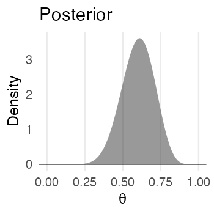
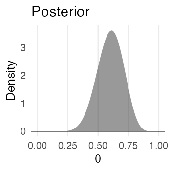
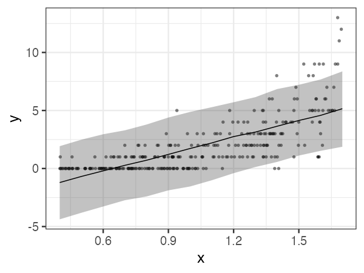
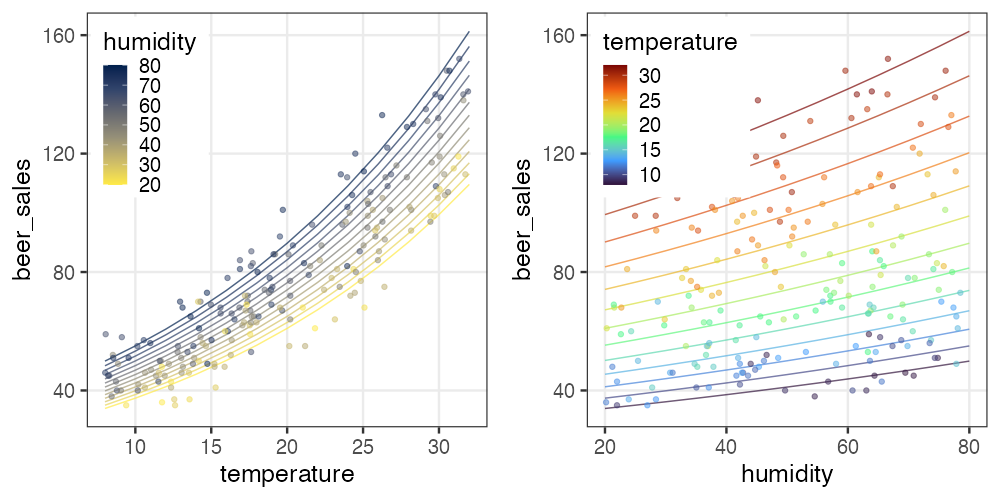
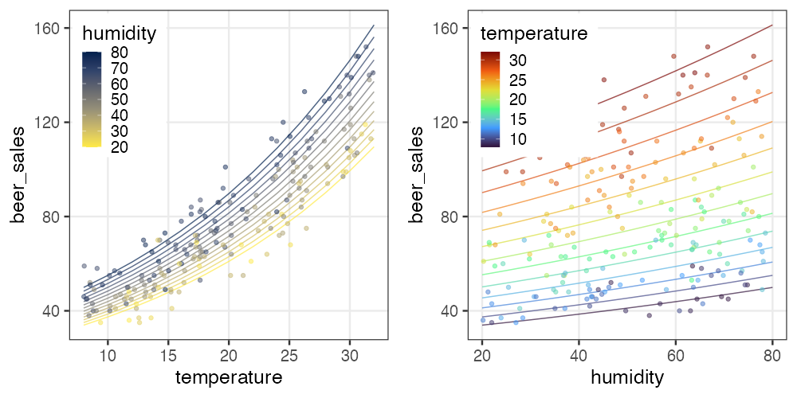

統計モデリング実習 2022 TMDU
(Graduate School of Life Sciences, Tohoku University)
- 導入、直線回帰
- 確率分布、擬似乱数生成
- 尤度、最尤推定
- 一般化線形モデル (GLM)
- 個体差、一般化線形混合モデル (GLMM)
- ベイズの定理、事後分布、MCMC
- StanでGLM
- 階層ベイズモデル (HBM)
https://heavywatal.github.io/slides/tmd2022stats/
ちょっとずつ線形モデルを発展させていく

久保先生の"緑本"こと
「データ解析のための統計モデリング入門」
をベースに回帰分析の概要を紹介。
線形モデル LM (単純な直線あてはめ)
↓ いろんな確率分布を扱いたい
一般化線形モデル GLM
↓ 個体差などの変量効果を扱いたい
一般化線形混合モデル GLMM
↓ もっと自由なモデリングを！
階層ベイズモデル HBM
MCMCで良さげなパラメータを効率よくサンプルする
乱数を使って（モンテカルロ法）、
前の値から次の値に飛ぶ（マルコフ連鎖）

推定結果は分布
 $\;\sim\;$

$\;\propto\;$
$\;\sim\;$

$\;\propto\;$

- 広がり具合によって不確実性も表現できる。
- データが増えると逐次学習で尖っていき、確信が強まる。

Stan
- Stan言語でモデルを柔軟に記述できる。
- C++で書かれていて高速に動作。
- RやPythonなどから呼び出して使うのが便利。
- RStanとCmdStanRの2つあるけど後者を使う。
前回、回帰ではないパラメータ推定をやった。
次に、回帰分析をStanでやってみる。
直線回帰するStanコードの例
Rと同様、 slope * x のようなベクトル演算ができる。
data {
int<lower=0> N;
vector<lower=0>[N] x;
vector[N] y;
}
parameters {
real intercept;
real slope;
real<lower=0> sigma;
}
model {
y ~ normal(intercept + slope * x, sigma);
}
変数の型: vector vs array
vector, row_vector, matrix は実数 real のみで、行列演算できる:
real x;
vector[3] v;
row_vector[3] r;
matrix[3, 3] m;
x * v // vector[3]
r * v // real
v * r // matrix[3, 3]
m * v // vector[3]
m * m // matrix[3, 3]
m[1] // row_vector[3]
array に型の制約は無いが、行列演算はできないので自力forループ:
array[3] int a;
array[3] int b;
for (i in 1:3) {
b[i] = 2 * a[i] + 1
}
変数をうまく使って可読性アップ
途中計算に名前をつけることでモデルが読みやすくなる:
model {
vector[N] mu = intercept + slope * x;
y ~ normal(mu, sigma);
}
transformed parameters に書くと
parameters と同様にMCMCサンプルが記録される:
transformed parameters {
vector[N] mu = intercept + slope * x;
}
model {
y ~ normal(mu, sigma);
}
コードの見通しは良くなるが、結果の閲覧はちょっとやりづらくなる。
パラメータの事前分布を明示的に設定できる
が、省略してもStanがデフォルトでうまくやってくれる。
そのせいで収束が悪いかも、となってから考えても遅くない。
parameters {
real intercept;
real slope;
real<lower=0> sigma;
}
model {
y ~ normal(intercept + slope * x, sigma);
intercept ~ normal(0, 100);
slope ~ normal(0, 100);
sigma ~ student_t(3, 0, 10);
}
事前分布の選別
-
とりあえず無情報事前分布 $[-\infty, \infty]$。Stanのデフォルト。
-
収束が悪かったら弱情報事前分布を試す。
事後分布を更新していったとき事前分布っぽさが残らないのが良い。- 取りうる値を逃すような狭すぎる分布はダメ。
- 狭すぎるよりはマシだが、広すぎても良くない。
- 一様分布 $[a, b]$ は一見無情報っぽくて良さそうだが、
事後分布に裾野が残ったり絶壁ができたりしがちなので微妙。
おすすめ: Student’s t分布 or 正規分布
https://github.com/stan-dev/stan/wiki/Prior-Choice-Recommendations
Stanおすすめ弱情報事前分布: Student’s t分布
Student’s $t(\nu=\nu_0, \mu = 0, \sigma = \sigma_0)$
- 自由度 $3 \le \nu_0 \le 7 $ で適当に固定。
- $\nu = 1$ でコーシー分布。裾野が広すぎて良くないらしい。
- $\nu \to \infty$ で正規分布。だいたいこれでいいらしい。
- スケール $\sigma$: 「推定したい値は$[-\sigma_0, \sigma_0]$に収まるだろう」という値。

MCMCサンプルを使ってベイズ確信区間を作図
data {
// ...
int<lower=0> N_tilde
vector[N_tilde] x_tilde;
}
// ...
generated quantities {
array[N_tilde] real y_tilde = normal_rng(intercept + slope * x_tilde, sigma);
}

🔰 Stanで一般化線形モデル
GLM回のデータをStanでモデリングしてみよう。
-
直線回帰
-
ポアソン回帰
-
ロジスティック回帰
-
重回帰
-
分散分析
-
共分散分析

 



🔰 Stanでpenguinsの回帰分析をしてみよう
https://allisonhorst.github.io/palmerpenguins/


第4回GLM回を参照。
🔰 Stanでpenguinsの回帰分析をしてみよう
https://allisonhorst.github.io/palmerpenguins/
Stan does not support NA と怒られるので欠損値を取り除いておく:
penguins_dropna = penguins |> tidyr::drop_na()
参考文献
- データ解析のための統計モデリング入門 久保拓弥 2012
- StanとRでベイズ統計モデリング 松浦健太郎 2016
- RとStanではじめる ベイズ統計モデリングによるデータ分析入門 馬場真哉 2019
- データ分析のための数理モデル入門 江崎貴裕 2020
- 分析者のためのデータ解釈学入門 江崎貴裕 2020
- 統計学を哲学する 大塚淳 2020